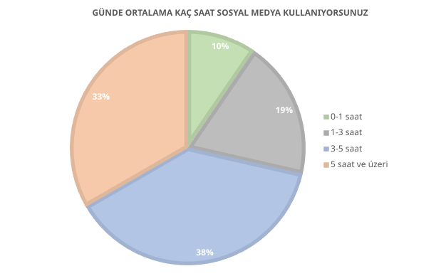
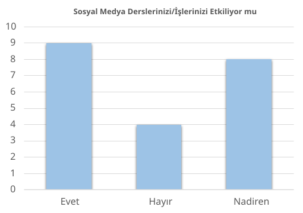

Araştırma Hakkında
Araştırmadan elde edilen verilerin daha anlaşılır hâle getirilmesi amacıyla grafikler kullanılmıştır. Aşağıda yer alan grafikler üzerinden 21 katılımcıdan gelen bulgular yorumlanmıştır.

Günlük Sosyal Medya Kullanımı
Bu araştırmada toplam 21 katılımcının günlük sosyal medya kullanım süreleri incelenmiştir. Elde edilen bulgulara göre:
- Katılımcıların büyük bir kısmının sosyal medyayı günde 3 saat ve üzerinde kullandığı görülmektedir.
- Özellikle 3–5 saat aralığında kullanım bildirenlerin sayısı (8 kişi) en yüksek grubu oluşturmaktadır.
- Bunu 5 saat ve üzeri kullanım bildiren 7 kişi takip etmektedir.
- 1–3 saat aralığında sosyal medya kullanan 4 katılımcı bulunurken, 0–1 saat aralığında kullanım bildirenlerin sayısı 2 kişi ile sınırlıdır.
Akademik ve Sosyal Etkiler
Araştırmaya katılan 21 kişinin yanıtları incelendiğinde öne çıkan noktalar şunlardır:
- Katılımcıların büyük çoğunluğunun sosyal medyanın derslerini ve işlerini etkilediğini düşündüğü görülmektedir.
- Katılımcıların 12’si “Evet” yanıtını vererek sosyal medyanın akademik veya iş yaşamları üzerinde belirgin bir etkisi olduğunu ifade etmiştir.
- Bunun yanında 6 katılımcı “Bazen” yanıtını vermiştir; bu durum etkinin kullanım yoğunluğuna bağlı olarak değişebildiğini göstermektedir.
- “Hayır” yanıtını veren katılımcı sayısının 3 kişi ile sınırlı olması, bu etkinin azınlıkta kaldığını ortaya koymaktadır.

Genel Değerlendirme
Araştırma bulguları, katılımcıların büyük bir bölümünün sosyal medyayı günde 3 saat ve üzerinde kullandığını ve bu kullanımın günlük yaşamda önemli bir yer tuttuğunu göstermektedir. En sık kullanılan platformun Instagram olduğu, bunu diğer sosyal medya platformlarının takip ettiği görülmektedir.
- Katılımcıların çoğu, sosyal medyanın ders ve iş yaşamlarını etkilediğini ya da zaman zaman etkilediğini belirtmiştir.
- Ayrıca sosyal medyanın bireyler üzerinde hem olumlu hem olumsuz etkiler yarattığı yönünde yaygın bir görüş bulunmaktadır.
- Katılımcıların önemli bir kısmı sosyal medya kullanımını azaltma veya bırakma konusunda zorlandığını ifade etmiştir.
Genel olarak sonuçlar, sosyal medyanın katılımcıların yaşamında yaygın ve etkili bir unsur olduğunu ve bilinçli kullanımın önemini ortaya koymaktadır.